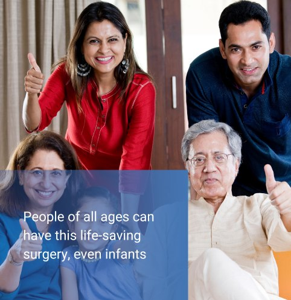
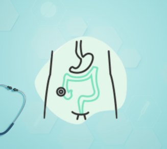
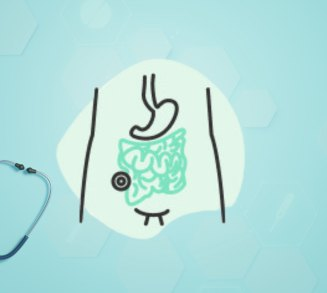

Start here
Understand the three main types of ostomy.
Reassuring, plainly written guides to what each procedure involves, why it may be needed, and what life looks like afterwards.

Foundations
What is an ostomy?
A surgically created opening that reroutes waste — why it's needed, what a stoma is, and adjusting to a new normal.

Type 01 · Colon
Understanding colostomy
Formed from the colon to manage waste from the large intestine — temporary or permanent, and what to expect afterwards.

Type 02 · Ileum
Understanding ileostomy
Diverts waste from the small intestine, bypassing the colon — common reasons, and the path to recovery.

Type 03 · Urinary
Understanding urostomy
Diverts urine from a diseased bladder to an external pouch — ileal and cecal conduits, and daily life.